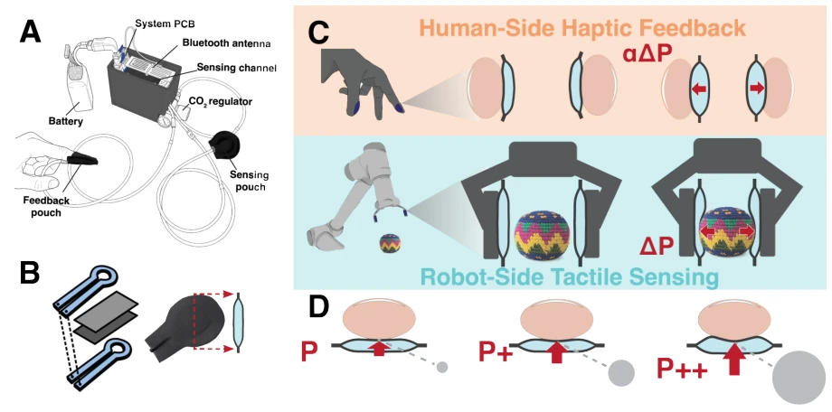
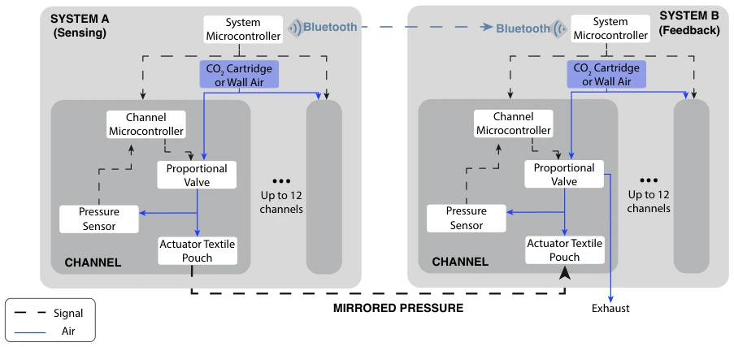
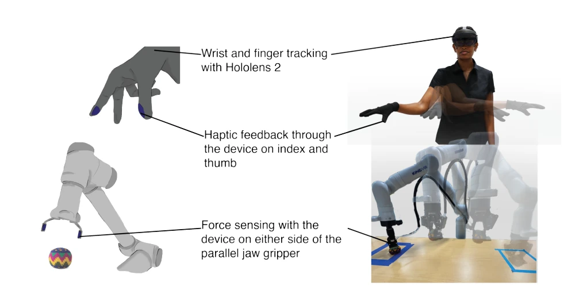
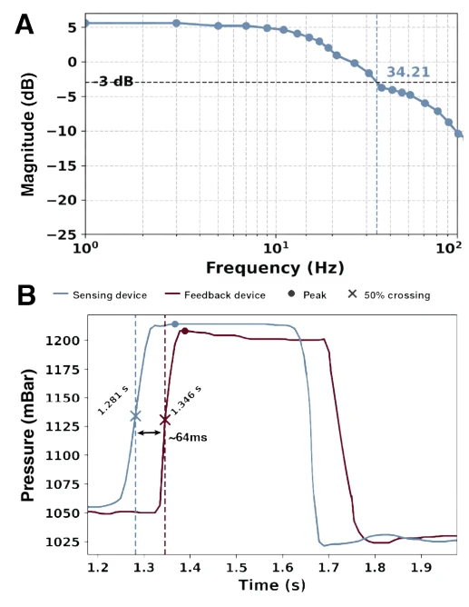
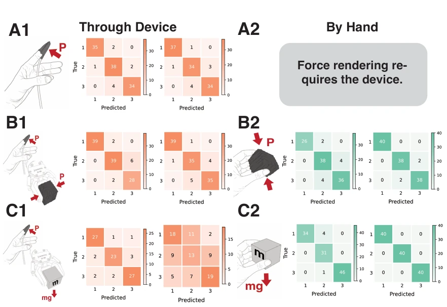
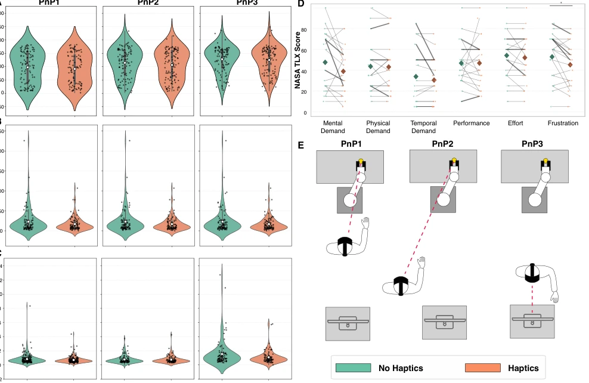

This time, the Stanford team transformed pneumatic haptics from a "laboratory ornament" into a "wearable device". The biggest highlight is closed-loop control, solving the chronic issue of pneumatic systems struggling to maintain stable pressure, with bandwidth exceeding 30Hz, far superior to open-loop schemes that can only emit pulses. The bidirectional interaction design is ingenious; pressure grasped by the robot is directly mapped to the fingers, saving the cognitive overhead of vibration encoding. However, there are drawbacks: the total device weight is nearly 300g, not light to wear on the hand; when users report latency, they cannot distinguish whether the robot is slow or the device is slow; most awkwardly, weight discrimination degrades significantly under teleoperation, indicating that haptics alone are insufficient and cognitive load must also be considered. Overall, this is a solid hardware engineering project, but still a distance from "seamless". Additionally, system latency is often misjudged as a device issue, and technical interruptions caused partial data loss, requiring further refinement of engineering robustness.
The core pain point of teleoperation lies in the lack of bidirectionality in haptic interaction. Human touch is bidirectional, but existing systems often separate sensing and display: robot side uses electronic arrays or vision [18-24], user side uses vibration or hearing [10, 11, 12]; this modality conversion leads to force information loss and increases cognitive load [13]. Pneumatic solutions could balance force and contact area [35, 36], but traditional designs rely on external compressors and valves, capable only of open-loop control, unable to maintain stable pressure [38, 39, 40, 41]. Additionally, open-loop pneumatic feedback is mostly transient pulses, making it difficult to convey continuous force information [35, 36]. This study aims to resolve this contradiction, achieving untethered continuous haptic interaction through distributed closed-loop control, providing high-quality data for teleoperation and imitation learning [2, 14].

Figure 1: A Full untethered pneumatic device overview with two channels: one sensing pouch for the robot, and one haptic feedback pouch worn by a user. B The pouches are made by die casting TPU coated nylon. C Two devices are connected in a twin configuration to enable haptic feedback during teleoperation. The user’s hand motion is tracked and sent as a target configuration for the pose and grasp for a robot manipulator. The pouches on the robot side sense interaction with an object (here, a hackey sack), and the pressure changes are forwarded with gain α to pouches worn by the user. D When the pouch is inflated while pressing on the fingertip, the user feels both increasing normal pressure and an increase in contact area.
方法Method
整体架构采用“孪生系统”，一套设备作为机器人端传感器，另一套作为用户端执行器。核心创新在于每个通道独立闭环：每个气动通道集成比例压电阀、压力传感器和专用微控制器，形成局部“传感器 - 控制器 - 执行器”单元，摆脱了中央控制瓶颈。控制算法采用 PI 控制，实时调节阀门开度以维持目标压力，支持持续保压而非瞬态脉冲。通信层通过蓝牙传输压力指令，延迟控制在 64ms 以内。硬件上，气袋由 TPU 涂层尼龙制成，通过 CO2 气瓶或墙气供气。这种分布式设计使得每个通道能独立调节压力，同时保持同步，实现了从机器人接触力到用户指尖压力的直接映射，无需中间模态转换。软件层面固件优先保证确定性时序，硬件总重约 300g，每通道 52g。系统级微控制器协调通道同步与无线通信，避免中心化瓶颈。
The overall architecture adopts a "twin system", one set of devices as robot-side sensors, another as user-side actuators. The core innovation lies in independent closed-loop per channel: each pneumatic channel integrates a proportional piezo valve, pressure sensor, and dedicated microcontroller, forming a local "sensor-controller-actuator" unit, breaking free from central control bottlenecks. Control algorithm uses PI control, adjusting valve opening in real-time to maintain target pressure, supporting continuous pressure holding rather than transient pulses. Communication layer transmits pressure commands via Bluetooth, latency controlled within 64ms. Hardware-wise, air bags are made of TPU-coated nylon, supplied via CO2 cylinders or wall air. This distributed design allows each channel to adjust pressure independently while maintaining synchronization, achieving direct mapping from robot contact force to user fingertip pressure, without intermediate modality conversion. Software level firmware prioritizes deterministic timing, hardware total weight about 300g, 52g per channel. System-level microcontroller coordinates channel synchronization and wireless communication, avoiding centralized bottlenecks.

Figure 5: System architecture of the closed-loop pneumatic haptic controller Each channel uses a proportional valve, pressure sensor, and local microcontroller to enable independent closed-loop pressure regulation of textile pneumatic actuators. Multiple channels are coordinated by a system-level microcontroller, which also handles wireless communication. A single CO2 cartridge or wall air supports all channels in a system. Two identical systems can be paired to transmit sensed pressure signals (System A) and reproduce them in real time (System B), enabling bidirectional tactile communication.

Figure 6: Overview of the hand tracking-based teleoperation system; finger and wrist tracking through the HoloLens 2; haptic feedback to the index and thumb with one twinned device, force sensing on either side of the parallel-jaw gripper with the other twinned device.
Experiments are divided into device characterization, perceptual discrimination, and teleoperation tasks. Device testing shows force bandwidth reaches 34.2Hz, response time 39ms, pressure holding 30 minutes. In perception experiments, 25 participants could accurately distinguish force (92%) and stiffness (90%+), but weight discrimination significantly dropped under teleoperation (3-element task only 53.8%), reflecting cognitive load impact. In teleoperation Pick-and-Place tasks, after enabling haptic feedback, average pressure reduced by 23.1%, task duration shortened by 27.4% (under vision-limited conditions), NASA TLX shows mental demand reduced by 18.1%. Ablation analysis indicates haptic benefit is maximal when vision is limited (PnP2/PnP3), but system latency is often misjudged as a device issue. Baseline is no-haptic condition and manual interaction. SUS score increased by 3.8 points, though not significant, the trend is positive. Technical interruptions caused some participants to be excluded, affecting statistical power.

Figure 2: Pneumatic Controller Characterization Average A bandwidth and B transmission delay results in between two devices - one sensing device communicating to a haptic feedback device - for n = 10 trials each.

Figure 3: Perception Study Results Confusion matrices for increasing force (A1; 1, 2, 3 cor- respond to 150, 300, and 450 mbar), stiffness (B1 and B2; 1, 2, 3 correspond to 0.630 N/mm, 1.77 N/mm, and 3.35 N/mm), and weight discrimination tests (C1 and C2; 1, 2, 3 correspond to 150 g, 300 g, and 450 g), ordering objects in sets of 2 and 3; counts on the diagonal show correct guesses; these counts are used to estimate the accuracy for each task; (A2) force results are shown only for the Haptics case since the test was only performed using the device.

Figure 4: Quantitative and Qualitative Teleoperation Results A Pressure, B Duration, C Path length results for the three pick-and-place tasks (PnP1: direct view, PnP2: obstructed view, PnP3: camera view) for haptics and no haptics; the violin plots show the mean (white dot), the inter-quartile range (grey bar), and the full range (grey line); D NASA Task Load Index Scores: Participants reported perceived workload across six dimensions, rated from 0 (none) to 100 (extreme); bolded lines indicate the three slowest participants (longest task duration); asterisks denote statistically significant differences between conditions (p < 0.05, n = 19); E Test setup for the three pick-and-place tasks, where participants faced the table and robot in PnP1 and PnP2, and faced a computer monitor that disp